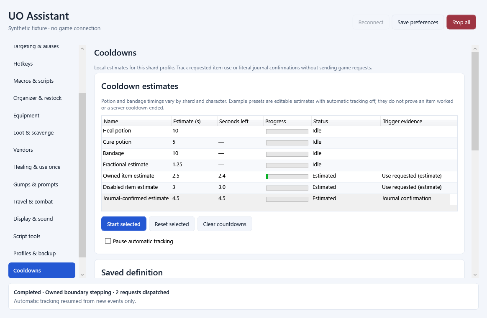
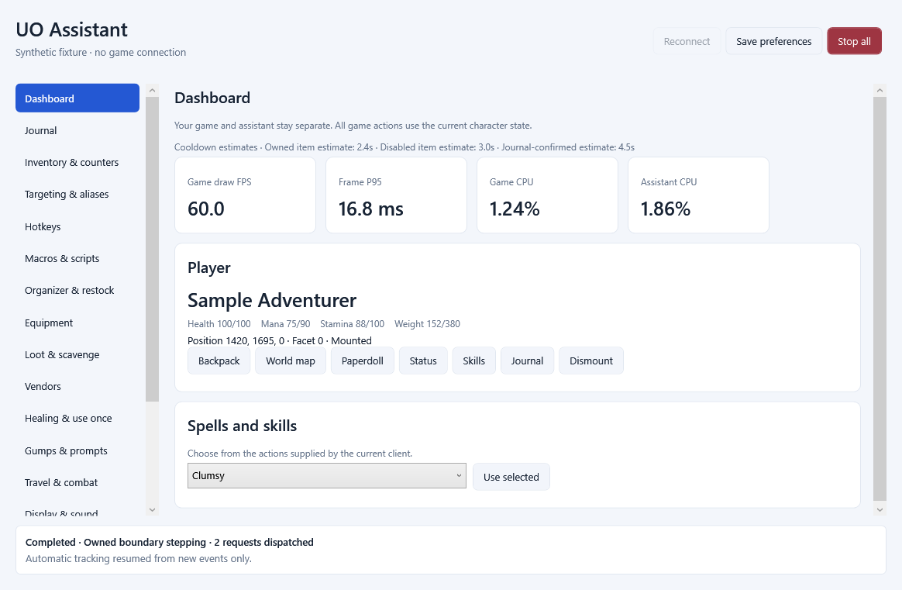

Make it your own
Add named potion, bandage or custom cooldowns. Use fractional seconds, edit durations and keep definitions separate for each shard profile.
UO ASSISTANT / 0.1.6 / WINDOWS x64
A GPU Ultima Online client with a separate assistant window. Keep your tools close, switch between shard profiles, and set potion, bandage and custom timers to suit the world you play.
Unsigned development preview · 118,433,447 bytes · Runtimes included · Bring your own compatible game data

NEW IN 0.1.6
Add named potion, bandage or custom cooldowns. Use fractional seconds, edit durations and keep definitions separate for each shard profile.
Start and reset manually, or enable item-use and literal journal-message triggers. Example automatic triggers start disabled.
View active estimates on the dashboard. Ready-message matches can complete a timer. The tracker itself sends no game actions.
A countdown estimates readiness. An item-use request is not a server acknowledgement, and a timer does not change a shard’s cooldown or bandage rules. Configure and test the durations and messages on your shard.

The launcher opens the GPU game client and assistant together. The assistant includes a dashboard, journal, inventory counters, targeting aliases, hotkeys, macros, organizer and restock tools, equipment, loot tools, vendors, healing controls, gump tools, travel controls, display settings, script tools and profile backup.
Closing the assistant closes its paired client, and closing the client closes that assistant. Login stays manual. Profiles and settings are stored separately from the installed program.
Explore the tools and their limits →GET STARTED
Use a complete, authorized Ultima Online data set and a compatible graphics driver. This distribution includes no game artwork, maps, accounts or shard settings. Update into the same application folder after closing this application’s launcher, client and assistant. Uninstall retains private profiles and unknown user-added files.
Full installation and cooldown guide →DOWNLOAD / 0.1.6
Unsigned Windows x64 development preview. Install for the current Windows user.
Download 0.1.6 ↓118,433,447 bytes
The source README explains managed builds, pinned dependencies and separate installer rebuild requirements.
The frozen development build passed 729 integrated client, assistant, protocol, storage and synthetic WPF checks. Its final installer passed 1,100 installation, verification and removal checks, including all 1,048 payload hashes. A copied GPU startup test was network-fenced, with no authentication or gameplay input.
These results establish the tested application and installation behavior, not a universal shard compatibility or frame-rate claim. Interactive setup appearance, finish-page launching, receiving-system gameplay and new shard-specific timer rules remain manual checks. External Qodo review was unavailable because it was signed out.
Installer SHA-256971126dc0e3a96251b278a56d4f0fb7b2872ff676f456f4aa1b6e86e21bb34eb